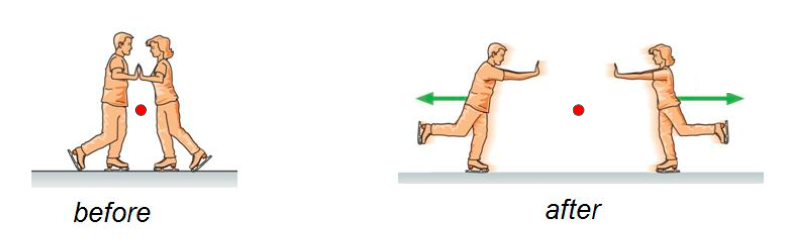

The center of mass is the point where an object's mass is effectively concentrated for purposes of analyzing motion. It is a powerful simplification tool for analyzing systems of particles and extended bodies.
In one dimension, for discrete masses, the center of mass is given by:
In vector form for three dimensions:
This formula holds for both particles and continuous mass distributions. For a rigid body, the center of mass is fixed relative to the body, while for systems of particles it may move dynamically.
Applying Newton’s Second Law to a system of particles leads to a fundamental result:
Here, \( M \) is the total mass of the system and \( \vec{a}_{\text{cm}} \) is the acceleration of the center of mass. Internal forces between parts of the system cancel due to Newton’s Third Law and do not affect the motion of the center of mass.
If the net external force on a system is zero, the total momentum is conserved and the center of mass moves at constant velocity:
Don't believe me about projectile motion? Watch this:
Imagine a rock exploding into pieces while flying through the air. Each piece flies off in a different direction. Despite this, the COM of the system (all the fragments) still follows the original parabolic trajectory as if the explosion never occurred.
Consider two ice skaters at rest who push off each other. Even though they move in opposite directions, the center of mass of the system remains stationary because no external force acts horizontally.
As a rocket ejects fuel downward, it loses mass. But the motion of the system (rocket + ejected fuel) still conserves total momentum. The COM accelerates smoothly even though the rocket’s mass changes continuously.
When analyzing objects that rotate and translate (e.g. rolling wheels), the translational motion of the COM is often separated from the rotational motion about the COM. This separation makes energy and force analysis much easier.
Problem: A 3 kg block is at position \( x = 0 \, \text{m} \), and a 5 kg block is at \( x = 4 \, \text{m} \). What is the position of the center of mass?
Solution:
Answer: The center of mass is at \( x = 2.5 \, \text{m} \).
Problem: A 6 kg object at rest explodes into two fragments. A 2 kg piece flies off to the left at 12 m/s. What is the velocity of the 4 kg piece so that the center of mass continues at rest?
Solution:
Use conservation of momentum. The total momentum before and after must be zero:
Answer: The 4 kg piece must move at \( 6 \, \text{m/s} \) to the right.
The center of mass acts as a simplified model point for real-world objects and complex systems. Understanding the COM allows us to apply Newton’s laws, conservation laws, and rotational dynamics far more easily. Whether studying rockets, collisions, or rolling motion, tracking the COM turns a difficult system into a manageable physics problem.
Center of Mass: